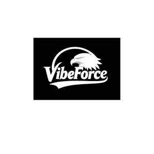

Trade Mark Journal No.2025/042 17 October 2025
UK00004274301 7 October 2025 (9,25,28)

- Class 9
- Sport whistles; Helmets for use in sports; Sports helmets; Spectacles for sports; Sports eyewear; Goggles for use in sports; Goggles for sports; Sports goggles; Sports (Goggles for -); Sports training simulators; Sports whistles; Sports betting applications; Protection helmets for sports.
- Class 25
- Footwear for sport; Footwear for use in sport; Sport shoes; Boots for sport; Sport shirts; Clothes for sport; Sport coats; Sport stockings; Sports jerseys and breeches for sports; Footwear for sports; Sports footwear; Sports jerseys; Sports shoes; Clothing for sports; Sports clothing; Footwear not for sports; Sports jackets; Combative sports uniforms; Sports vests; Sports wear; Boots for sports; Sports socks; Sports garments; Clothes for sports; Sports shirts; Sports pants; Sports clothing [other than golf gloves]; Sports bras; Sports bibs; Sports caps; Sports headgear [other than helmets]; Sports overuniforms; Athletics footwear; Sports over uniforms; Sports singlets.
- Class 28
- Sport hoops; Sport balls; Sports games; Sports equipment; Gloves for sports; Balls for sports; Sports balls; Nets for sports; Tennis uprights [sports equipment]; Javelins [for field sports]; Protectors for elbows for use when participating in the sport of cricket; Harnesses for use in sports; Chest protectors adapted for playing the sport of taekwondo; Supporters (Men's athletic -) [sports articles]; Men's athletic supporters [sports articles]; Balls for playing sports; Sports bows [archery]; Apparatus for use in training for the game of rugby [sporting equipment]; Balls for racket sports; Rings for sports; Gymnastic and sporting articles; Leg guards adapted for playing sport; Discuses for sports; Sports training apparatus; Golf flags [sports articles]; Pads for use in sports; Discuses [for field sports].
VIBEFORCE DEVELOPMENT LIMITED
WANG ZUOJIONG